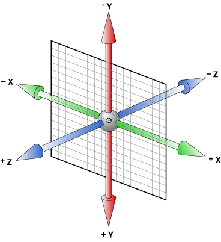

CSS3 3D
什么是3d的场景呢？ 2d场景，在屏幕上水平和垂直的交叉线x轴和y轴
3d场景，在垂直于屏幕的方法，相对于3d多出个z轴
Z轴：靠近屏幕的方向是正向，远离屏幕的方向是反向

CSS3中的3D变换主要包括以下几种功能函数： 3D位移：CSS3中的3D位移主要包括translateZ()和translate3d()两个功能函数； 3D旋转：CSS3中的3D旋转主要包括rotateX()、rotateY()、rotateZ()和rotate3d()四个功能函数； 3D缩放：CSS3中的3D缩放主要包括scaleZ()和scale3d()两个功能函数；
景深
生活中的3d 区别于2d的地方
近大远小 景深
程序中实现的方法 perspective 元素距离 视线的距离（物体和眼睛的距离越小，近大远小的效果越明显） perspective: 1200px;（在父元素中使用） transform:perspective(1200px) （在子元素中使用） 两个都设置会发生冲突，建议只设置父元素，通常的数值在900-1200之间
如果当你的视线距离物体足够远的时候，基本上就不会有近大远小的感觉
perspective-origin;
观察3d元素的（位置）角度 perspective-origin：center center （中心）
perspective-origin：left top （左上角）
perspective-origin：100% 100% （右下角）
transform-style属性
transform-style属性是3D空间一个重要属性，指定嵌套元素如何在3D空间中呈现。他主要有两个属性值：flat和preserve-3d 其中flat值为默认值，表示所有子元素在2D平面呈现。preserve-3d表示所有子元素在3D空间中呈现。
也就是说，如果对一个元素设置了transform-style的值为flat，则该元素的所有子元素都将被平展到该元素的2D平面中进行呈现。沿着X轴或Y轴方向旋转该元素将导致位于正或负Z轴位置的子元素显示在该元素的平面上，而不是它的前面或者后面。如果对一个元素设置了transform-style的值为preserve-3d，它表示不执行平展操作，他的所有子元素位于3D空间中。

3d重要功能函数
1、 3D位移
在CSS3中3D位移主要包括两种函数translateZ()和translate3d()。translate3d()函数使一个元素在三维空间移动。
语法：translate3d(tx,ty,tz) tx：代表横向坐标位移向量的长度；
ty：代表纵向坐标位移向量的长度；
tz：代表Z轴位移向量的长度。此值不能是一个百分比值，如果取值为百分比值，将会认为无效值。
ranslateZ()函数的功能是让元素在3D空间沿Z轴进行位移。 语法：translateZ(t) t：指的是Z轴的向量位移长度。
2、 3D旋转
在三维变形中，我们可以让元素在任何轴旋转。为此，CSS3新增三个旋转函数：rotateX()、rotateY()、rotateZ()和rotate3d(x,y,z,a)。
rotateX(a)
rotateX()函数指定一个元素围绕X轴旋转，旋转的量被定义为指定的角度；如果值为正值，元素围绕X轴顺时针旋转；反之，如果值为负值，元素围绕X轴逆时针旋转。
rotateY(a)
rotateY()函数指定一个元素围绕Y轴旋转，旋转的量被定义为指定的角度；如果值为正值，元素围绕Y轴顺时针旋转；反之，如果值为负值，元素围绕Y轴逆时针旋转。
rotateZ(a)
rotateZ()函数和其他两个函数功能一样的，区别在于rotateZ()函数指定一个元素围绕Z轴旋转。
rotate3d(x,y,z,a)
x：是一个0到１之间的数值，主要用来描述元素围绕X轴旋转的矢量值；
y：是一个０到１之间的数值，主要用来描述元素围绕Y轴旋转的矢量值；
z：是一个０到１之间的数值，主要用来描述元素围绕Z轴旋转的矢量值；
a：是一个角度值，主要用来指定元素在3D空间旋转的角度，如果其值为正值，元素顺时针旋转，反之元素逆时针旋转。

3、 3D缩放
CSS3 3D变形中的缩放主要有scaleZ()和scale3d()两种函数，当scale3d()中X轴和Y轴同时为1，即scale3d(1,1,sz)，其效果等同于scaleZ(sz)。通过使用3D缩放函数，可以让元素在Z轴上按比例缩放。默认值为１，当值大于１时，元素放大，反之小于１大于0.01时，元素缩小
scale3d(sx,sy,sz)
sx：横向缩放比例；
sy：纵向缩放比例；
sz：Z轴缩放比例；
scaleZ(s)
s：指定元素每个点在Z轴的比例。
注：scaleZ()和scale3d()函数单独使用时没有任何效果，需要配合其他的变形函数一起使用才会有效果
动画
CSS3属性中有关于制作动画的三个属性：
transform,transition,animation
keyframes
@keyframes mymove{ from{初始状态属性}
to{结束状态属性}
}
或
@keyframes mymove{
0%{初始状态属性}
100%{结束状态属性}
}（中间再可以添加关键帧）

animation和transition的区别
相同点：都是随着时间改变元素的属性值。 不同点： transition需要触发一个事件(hover事件或click事件等)才会随时间改变其css属性； 而animation在不需要触发任何事件的情况下也可以显式的随着时间变化来改变元素css的属性值，从而达到一种动画的效果，css3的animation就需要明确的动画属性值。
animation
animation复合属性。检索或设置对象所应用的动画特效。
1.animation-name 检索或设置对象所应用的动画名称
说明：必须与规则@keyframes配合使用，eg:@keyframes mymove{} animation-name:mymove
2.animation-duration 检索或设置对象动画的持续时间
说明：animation-duration:3s; 动画完成使用的时间为3s
3.animation-timing-function 检索或设置对象动画的过渡类型
说明： linear：线性过渡。等同于贝塞尔曲线(0.0, 0.0, 1.0, 1.0)
ease：平滑过渡。等同于贝塞尔曲线(0.25, 0.1, 0.25, 1.0)
ease-in：由慢到快。等同于贝塞尔曲线(0.42, 0, 1.0, 1.0)
ease-out：由快到慢。等同于贝塞尔曲线(0, 0, 0.58, 1.0)
ease-in-out：由慢到快再到慢。等同于贝塞尔曲线(0.42, 0, 0.58, 1.0)
4.animation-delay 检索或设置对象动画延迟的时间
说明：animation-delay:0.5s; 动画开始前延迟的时间为0.5s)
5.animation-iteration-count 检索或设置对象动画的循环次数
说明： animation-iteration-count: infinite | number;
infinite：无限循环
number: 循环的次数
6.animation-direction 检索或设置对象动画在循环中是否反向运动
说明： normal：正常方向
reverse：反方向运行
alternate：动画先正常运行再反方向运行，并持续交替运行
alternate-reverse：动画先反运行再正方向运行，并持续交替运行
7.animation-play-state 检索或设置对象动画的状态
说明： animation-play-state:running | paused;
running:运动
paused: 暂停
animation-play-state:paused; 当鼠标经过时动画停止，鼠标移开动画继续执行
实例